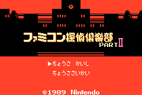

Famicom Mini 28 - Famicom Tantei Club Part II - Ushiro ni Tatsu Shoujo - Zen, Kouhen (Japan)
EEPROM 64K Save Format Spec gbakit Built-In 💾 MultiBoot
Cartridge Identity
- Game Code
FTUJ(FamilyFTU)- Header Title
TANTEI CLUB2- Maker / Revision
01/ rev0- ROM Size
- 4.0 MiB (4,194,304 B)
- Save Media
EEPROM 64K- SHA-256
ce14d1339e75d82d790b9aa8b2e014e1c15e1d20bb35f8e3c4c907f9c2db5582
Screenshots


Link Cable & Multiplayer Communications
This title contains detected communication capabilities: 💾 MultiBoot.
Detailed protocol specifications, SIO registers, Joybus commands, and MultiBoot sequences are documented in the Link & Multiplayer Reference.
- Single-Cart MultiBoot
- Single-Cartridge MultiBoot (Download Play) client/server handler · Thumb SWI 0x25 (
0xDF25):0x036b5e,0x051258,0x05a506,0x068830
Battery Save Format Specification
Open Full Save Format SpecDownload save-format.json
- Specification Coverage
- 4 mapped fields · 0 verified checksum(s) · Confidence: HIGH
- gbakit Built-In Support
- Built-in (FTUJ)
gbakit save verify FTUJ save.sav
gbakit save decode FTUJ save.sav
gbakit save fix FTUJ damaged.sav -o repaired.savObserved Battery Save Layout
- Fill Byte & Active Size
0x00fill · 512–512 / 8,192 B active (entropy 0.16 bits/B)- Active Offset Ranges
0x0–0x1FF(1 total)- ASCII Magic / Headers
NAT_Y!- Observed Variable Regions
- 0 bytes across 0 spans: None
- Candidate Checksum/Counter Spans
- None
Asset Map (formatkit.asset-map.v1)
Download FTUJ-r0-ce14d1339e75d82d.asset-map.json.gz (4,202 B (4.1 KiB)) Verified PASS · 0.05% coverage
| Metric | Bytes / Value | Entries |
|---|---|---|
| Identified | 1,984 B (1.9 KiB) (0.05%) | 27 |
| Mapped | 0 B (0.00%) | 0 |
| Opaque | 0 B (0.00%) | 0 |
| Unknown | 4,192,320 B (4.00 MiB) (99.95%) | 27 |
| Total ROM Size | 4,194,304 B (4.00 MiB) | 54 |
| Coverage % | 0.05% | — |
| Entries w/ Code Refs | 26 / 54 (48.15%) | — |
Top Identified Formats: gfx.gba-palette (26 · 1,792 B (1.8 KiB)) · gba.rom-header (1 · 192 B)
Largest unknown Extents (Headerless / Custom Asset Candidates)
| Offset | Size | Shannon Entropy | Code Refs |
|---|---|---|---|
0x0033410C | 835,316 B (815.7 KiB) | 5.667 bits/B | 0 |
0x00260F24 | 670,624 B (654.9 KiB) | 4.760 bits/B | 0 |
0x001E6968 | 501,148 B (489.4 KiB) | 5.105 bits/B | 0 |
0x000A0A2C | 391,340 B (382.2 KiB) | 8.000 bits/B | 0 |
0x001002F8 | 262,984 B (256.8 KiB) | 8.000 bits/B | 0 |
gzip -dk FTUJ-r0-ce14d1339e75d82d.asset-map.json.gz && gbakit map verify rom.gba FTUJ-r0-ce14d1339e75d82d.asset-map.json
gbakit assets export rom.gba --asset-map FTUJ-r0-ce14d1339e75d82d.asset-map.json -o out/Text, Fonts & Scene Data
- Primary Text Encoding
- Compressed / custom-encoded text
- Font & VWF Indicators
- VWF Width Table No 1bpp Font · BIOS SWIs: BitUnPack
0x10:22· LZ770x11/12:23· Huffman0x13:13· RLE0x14/15:31 - Scene & Packaging
0ROM pointer tables (≥32 entries,0≥200) ·0relativeu32TOCs ·97OAM metasprite hits